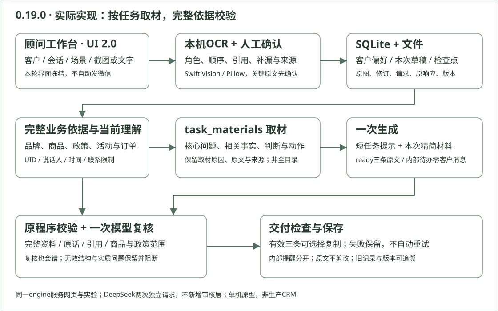

B · 客户顾问为什么需要这个工具
版本0.19.0。目标用户是精品皮具客户顾问，既回应咨询，也做推荐、购后关怀、生日祝福、唤回和活动邀请。目标是少整理、少重填、拿到有依据且可选择的微信；没有真人顾问研究或节时证据证明这个目标已经实现。
题目要求与自行取舍
| 题目要求 |
本项目选择 |
| 虚构奢侈品牌，说明假设 |
澄序，低调、重视日用；仅托特18800、肩包12800、卡夹2800元。品牌/政策为自定，不是行业标准 |
| 六场景、客户/场景/聊天及适用商品信息、三条中文微信 |
单页六场景，有效生成恰好三条；真缺原资料给顾问零客户消息，不硬凑三条 |
| A work log、B方法、C八列50例、D截图评估、E缺陷改进及版本 |
保留原50/150、原评分/失败，当前定向五案单列 |
| 演示/源码/录屏选交，架构图加分 |
提供当前源码、本机工具、保存结果回放及实际架构图。公网部署和生产CRM不是题目要求 |
截图OCR与复核、文件夹、SQLite检查点、事实索引、严格字段、模型复核和拒收营销是我们自行增加的设计。没有登录、云同步、自动发微信或真实库存/订单系统。
正常工作与取舍
称呼即可建客户，选场景、放截图或输入聊天，必要时补一句线下背景；已有记录优先使用。截图按顾问自己微信账号右顾问/左客户出草稿，可改角色/文字/顺序并人工补漏，确认后导入；不把未转写语音当已知。关键正文未进入工具，请顾问处理，不能替工具让客户重发。无聊天生日、简单报价无预算、已有用途的推荐仍可开始。
长期偏好与拒收推广跟随客户；本次预算和暂缓/换款属于会话。用明确UID恢复，不按姓名猜。单机SQLite加浏览器恢复副本处理检查点，图片/JSON保留来源与版本；这不是生产多租户认证。
界面沿用UI2.0.0，本轮字节未改。生成、选择、复制在右侧；资料在左，详细依据/历史按需展开。正常首开不选最新示例，回访恢复自己的上次会话。已有复制粘贴功能由用户确认，未把自动化toast冒充新的原生粘贴证据。
当前实现的生成与校验

Python标准库服务、原生HTML/CSS/JS、SQLite/文件；Pillow与macOS Swift Vision做本地OCR。页面与实验共用engine。DeepSeek beta严格工具请求是约束，不是供应商一定合规的保证；当前N16复核无效JSON就是反证。
生成先用既有理解、当前消息/前文及已选客户记录形成任务，再按字段/片段取材。system只给简短任务与少量正向示例；user只给本次task、角色/引用/时间、上下文、联系限制和facts，不再附整本规则、全部商品/unknown或完整来源目录。answer_basis区分事实、日常判断、可用动作；取材理由、原文、转换及来源单独留内部。
相关未知仍保留：负重会用空重、装物重量/舒适度未知；单纯价格或好评不会收到它们。清洁剂动作处于标签信息收集和售后判断，沾水步骤仅用于沾水；活动体验不预先塞同行登记。嫌贵而问用途，不自动检索折扣。库存问题已有正文时可以回复承接核实，严格请求约定ready三字段；真原资料缺失仍为needs_advisor。
完整品牌v0.4、已知/未知事实、原输入和来源目录继续交给原程序校验与一次模型复核并保存。两次请求来自同一提供方，不代表两个独立人类裁判。复核按具体来源核对，错误引用、矛盾判定也可能被程序或人工发现。无效JSON、缺判定/候选、错误协议仍拒绝；只对已有两种可明确兼容情况适配并留原文，不截前三条或自动重试。
手机型号仅查有限官方来源表，裸机与包外尺寸分对象，生成/复核共用来源与派生判断。没有实时搜索全部型号能力，未收录不假装查询。
测试与判断
原业务集N01—N50为8问候、14推荐、8购后、6唤回、7活动、7价格异议。先写真实任务和检查依据再冻结，不把标准答案塞进客户输入。早期F集、十四挑战案和已见16案是开发材料，不当未见测试。原50输入及150条保持原样；首四0.15.1、余46为0.15.2，各案首次生成不抽签重试，原始34组交付与0.15.3统一离线35组分列，不能当事实正确率。
0.18八案保留为上轮失败与改进证据；0.19.0五案各一次生成/复核，本轮10请求，不重跑50。五案全部同一代码/品牌/提示冻结，真实结果后没有改生成或校验代码来另造一个未验证当前版。N16仍不通过，N44仍需编辑，不能因其余成功宣称整体就绪。
“好”先看独立答清当前问题、事实归属/政策边界，再看自然、温暖、相关性与选择价值。简单任务三条功能接近允许。正常服务收尾、必要否定提醒、相关试背可以保留；要减少的是无关限制、假设需求、内部自述和无依据操作。
S0/S1（自定）：错价/折扣、无据售后/体感承诺、泄露内部敏感信息、违反明确拒绝、替工具向客户补原文、虚构已执行动作，优先阻断。S2：漏答、错误否定合理用法、正常任务误拦。S3：重复、略书面、可省建议或轻微分类，单列polish，不同权重。原50的旧评分不因本次尺度校正而覆盖。
程序、模型复核、AI开发者编辑评读分别记录，也分别可能错。已有证据支持保存恢复、来源核对和联系限制的流程能力；没有真人愿发率、总节时或优于同资料通用模型文案的证据。简单问题可能自己回复更快；本地规则无法证明全部中文含义。